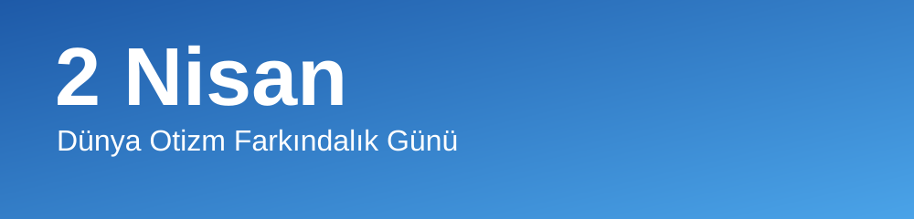

Hoş geldiniz
Her yıl 2 Nisan tarihinde Dünya Otizm Farkındalık Günü kutlanıyor. Bu günün amacı, otizmli bireyleri daha iyi tanımak ve onlara karşı daha anlayışlı olmaktır.
Bu siteyi, otizm hakkında öğrendiklerimi arkadaşlarımla paylaşmak için hazırladım. Araştırma yaparken otizmle ilgili çok yanlış bilgi olduğunu fark ettim. Bu yüzden sitede doğru bilgilere yer vermeye çalıştım.
Kısa bilgiler
2 Nisan
Birleşmiş Milletler'in ilan ettiği farkındalık günü
1 / 100
Dünya Sağlık Örgütü'ne göre yaklaşık her 100 çocuktan 1'i otizmli
Mavi
Bu günün rengi mavi, birçok bina mavi ışıkla aydınlatılıyor
Dünyanın her türlü zihne ihtiyacı var.
Temple Grandin (2010 TED konuşmasının başlığı)
Sitede neler var?
- Otizm Nedir?: Otizmin ne olduğu, rakamlar ve yanlış bilinenler
- 2 Nisan: Günün tarihçesi ve simgeleri
- Belirtiler: Hangi davranışlar fark edilebilir, ne yapılmalı
- Nasıl Destek Olabiliriz?: Günlük hayatta ve okulda yapılabilecekler
- Kaynaklar: Yararlandığım siteler
Unutmayalım: Otizm bir hastalık değil, farklı bir gelişim biçimidir.